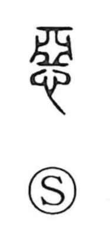

悪

Kun: warui, ashi, ashimu | On: aku, o
evil ・ badness ・ wickedness ・ to detest
Explanation
悪 abbreviates 惡, combining 心, the heart, with 亞 as its phonetic. 亞 pictures the ground plan of an underground burial chamber, the place inhabited by the dead.
For the living, this was an ominous place approached with avoidance and ritual caution. 悪 names the adverse feeling attached to it. Directed toward someone or something, that feeling becomes hatred or detestation.
From what is unwelcome come badness, wrongdoing, calamity, ugliness, and bodily unpleasantness. The moral opposition of good and evil is one development of this wider aversion. Other grammatical uses, including exclamation and questioning, belong to interchange with related-sounding words.